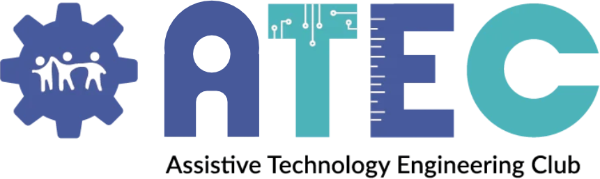

User-Centered
Design-Focused
We are the Assistive Technology Engineering Club (ATEC), a group of students at the University of Alberta dedicated to creating customized 3D printed assistive technology for anyone in need.
Learn more about Assistive Technology below!
Assistive technologies encompass any tool, device, or software designed to help individuals navigate their day-to-day lives with greater independence. These solutions span a wide range of complexity, from a simple custom cup holder that prevents spills to a fully motorized wheelchair. Ultimately, assistive technology is measured not by its level of innovation, but by the level of independence and service it delivers to the user.
If you have ever used a bottle opener or phone stand, you have experienced the subtle yet profound impact of assistive technology. For individuals with mobility or accessibility needs, these tools transform everyday hurdles, like putting on shoes or using a keyboard, into manageable tasks. Reliable assistive technology matters because when access to these customized tools is blocked by cost or complexity, it directly limits an individual's fundamental right to independence.
While the commercial assistive technology market often suffers from high costs and generic mass production, ATEC operates at the grassroots level to deliver custom, 3D-printed devices tailored to individual needs. Our low-cost model directly dismantles traditional barriers to accessibility, providing personalized tools that would otherwise be unavailable or unmodifiable on the open market. In doing so, ATEC serves as both a practical service provider and an educational movement, empowering the next generation of students to advance assistive design.

Accessing Our Services
ATEC is open to assisting anyone who may need help with designing a custom assistive technology to fit your personal needs!
After taking on your request, we work closely with you, the user of the assistive technology, to ensure that it not only meets your expectations but is something you want to use.
Fill out our project intake form to begin working with ATEC!
Potential User Expectations
Potential assistive technology users can expect to be heavily involved with the design of their assistive technology. ATEC will make sure that your feedback is taken into account during every step of the project.
Whether looking to modify an existing assistive technology, or starting from the ground up, ATEC members will work closely with you to deliver you the device you want and need!
To get started on the project process, fill out our project intake form or contact us if you have additional questions.
What to expect as a potential member
Members at ATEC can expect to work on projects where you can apply various skills with a focus on helping make other people's lives easier.
Whether you are interested in engineering design, research, or administrative work, ATEC could use your expertise!
Learn more about the different roles in ATEC below: